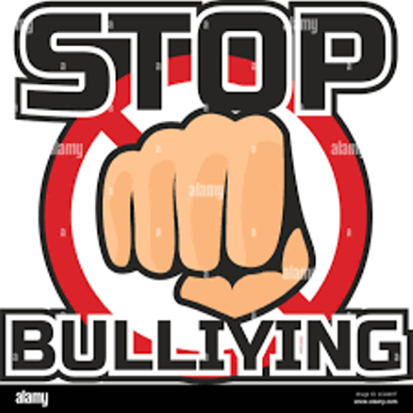

Feedback
|
|
|
|
|
|
|
|
Why was this website created?
The point of creating this website is raising awareness about cyber bullying specifically to the teenagers ages 11-18 telling them about cyberbullying and the effects and causes and how we can prevent it.
What is bullying?
Bullying that occurs via digital devises is known as cyberbullying. Cyberbullying might involve shame or humilation caused by disclosing intimate or private information about another individual. Cyberbullying may sometimes cross the line into illegal or criminal activity.
Causes:
In many respects society has changed but in others it has remained the same the only thing that has changed are techniques. Cyberbullying has been around for a long time but only recently have people realized that it’s a problem that needs to be handled. Let's take a look at some factors that contribute to cyberbullying and how everyone can help to avoid it. There is a widespread misunderstanding that cyberbullying exclusively affects the youngsters of course they are affected by the problem. It made worse how difficult it is for parents to keep track on their children’s internet activities. Cyberbullying on the other hand is an issue that can and does impact individuals of all ages from all over the world.
Effects:
This might be due to a number of factors. Unlike conventional bullying, which is generally restricted to school and recognized bullies, cyberbullying can happen at any time day or night and is often committed by anonymous sources. This makes it more rutheless and in some cases, brutal.
Solution:
Preventing cyberbullying is a matter of awareness and response which means knowing what children are doing and how they are vulnerable, then helping them learn to respond when their well-being is threatened by bullies, trolls, and other dangerous users online.

References:
- Assistant Secretary for Public Affairs (ASPA).
- “What Is Cyberbullying.” StopBullying.gov, 27 Aug. 2021, https://www.stopbullying.gov/cyberbullying/what-is-it.
- “The Real Causes of Cyberbullying and How to Prevent It.” SOS Safety Magazine, 26 Nov. 2019, https://sossafetymagazine.com/bullying/the-real-causes-of-cyberbullying/. Gordon, Sherri.
- “Learn to Recognize the Real-Life Effects of Cyberbullying on Children.” Verywell Family, https://www.verywellfamily.com/what-are-the-effects-of-cyberbullying-460558